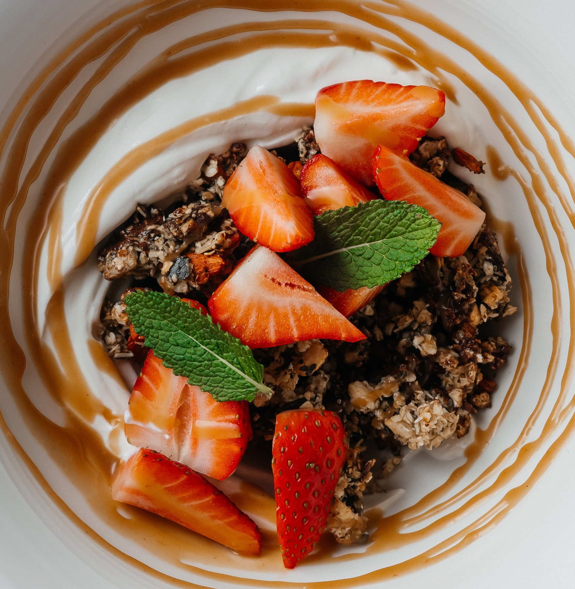

Muy francés. Muy relajado. Muy vivo.
Abrimos los miércoles y domingos de 9:30 a 17:00 y de jueves a sábado de 9:30 a 21:00, con platos modernos y frescos para desayuno y almuerzo. De jueves a sábado por la noche también servimos cenas con vinos seleccionados en un ambiente agradable.
El bistró en Quedlinburg
El bistróKiku está aquí.
Como hermano informal del Restaurant Kiku, incluido en la guía Michelin, trae cocina seria a la mesa en un ambiente relajado.
El chef Jan Fribus reinterpreta sus recetas favoritas, hornea croissants, pan y pasteles frescos cada día y sorprende con una propuesta diaria.
Desayuno. Almuerzo. Algo entre medias.
Sin complicaciones. Y con la máxima calidad.
Cada día en Steinbrücke, justo junto a la plaza del mercado.
Nos encantará recibirle.

Pan recién horneado, fina pastelería y sabores intensos en un ambiente relajado.
Reserva
Reserve una mesa en Kiku Bistro.
Elija fecha, hora y número de personas directamente en el formulario de reserva.
Duración Las reservas están previstas para 2 horas.
Grupos Para 5 o más personas, reserve por teléfono.
Teléfono +49 3946 4139064
KIKU Restaurant
Noches especiales en Restaurant KIKU.
A pocos pasos del bistró, Jan Fribus sirve en Pölle 8 un menú para noches especiales: tranquilo, personal y con finos acentos asiáticos.
Menú de cena De jueves a domingo desde las 18:00
Dirección Pölle 8, 06484 Quedlinburg
Cada día en Steinbrücke, justo junto a la plaza del mercado.
Bonjour et bon appétit!
Nos encantará recibirle.
Steinbrücke 2
06484 Quedlinburg
Miércoles & domingo
9:30 - 17:00
Jueves - sábado
9:30 - 21:00
Lunes - martes
Cerrado